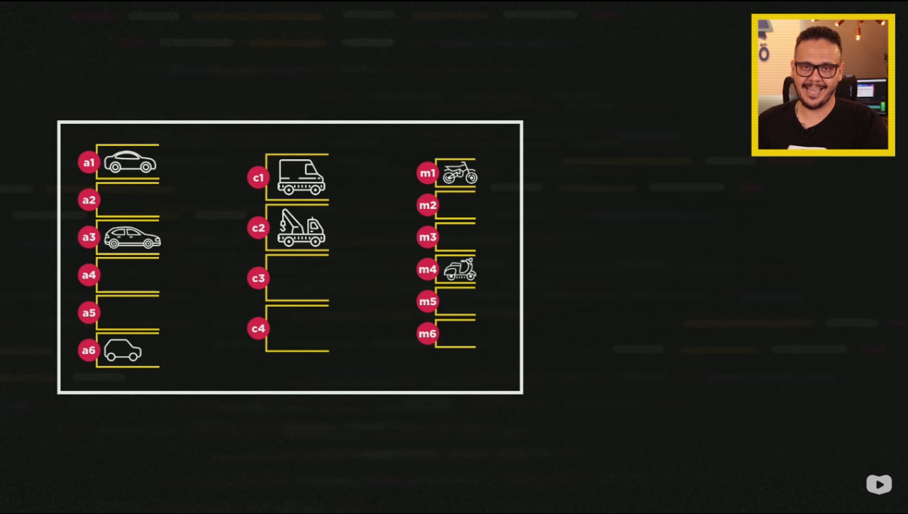

Professor explicando sobre variáveis e fazendo a analogia com um estacionamento de carros e vagas, correspondendo a variáveis utilizadas em um computador
Professor explicando a proposta básica de um indentificador e quais as regras básicas ao criar
Para descobrir o tipo primitivo no JavaScript, utilizamos o comando typeof